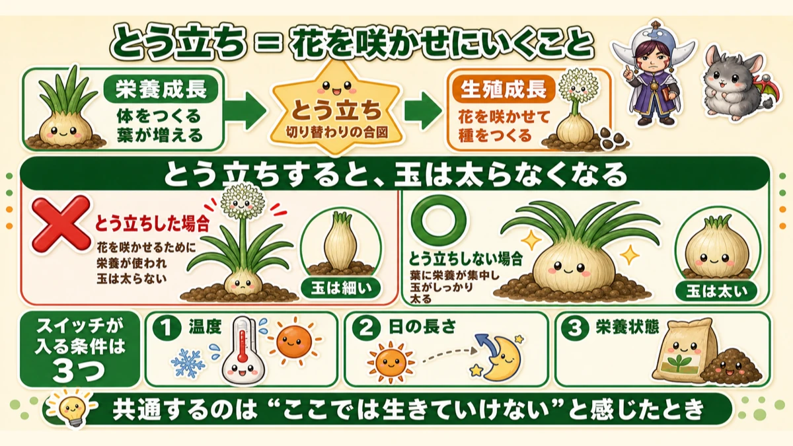
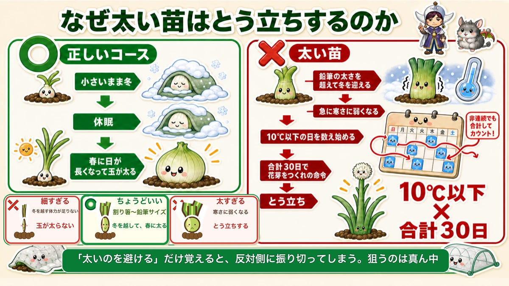
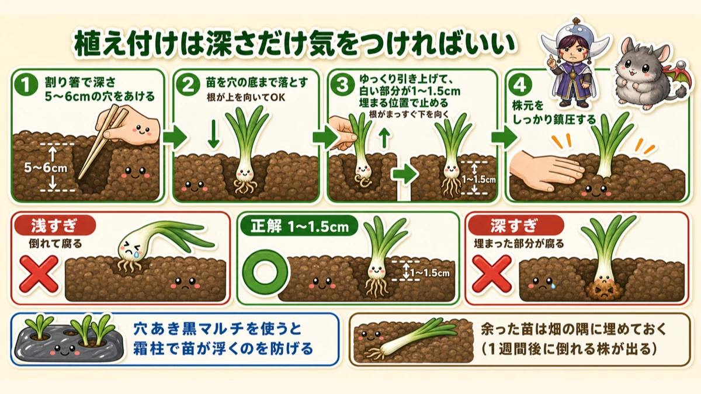
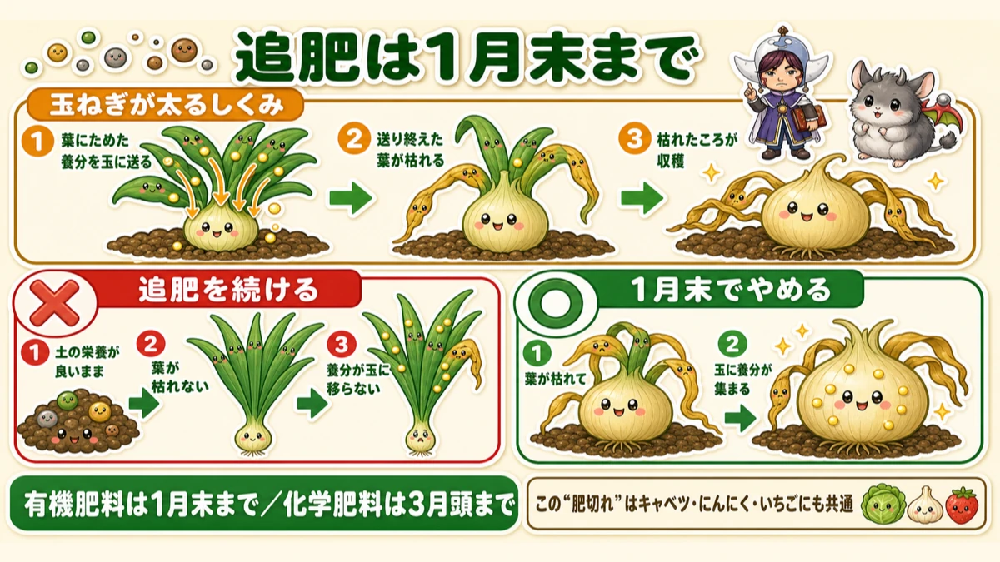

An onion counts cold days 🧅 Thirty below 10 °C and it bolts — so don't buy fat plants

🧅 "A flower stalk came up and that was the end of it."
🧅 "Magnificent leaves, and the bulb never swelled."
🧅 "I've no idea which plants to buy."
Hello, I'm Eiko. Eight years of growing vegetables organically and without pesticides, and a teaching licence in science.
Onions go in before winter and come out in early summer — over half a year in the ground, one of the longest crops there is.
The headline:
Almost every onion failure is bolting. And it's decided at the moment you buy the plants.
Once a flower stalk comes up, the bulb stops swelling and there's nothing to do but pull it. After six months of waiting, that stings.
The way to avoid it is simple: don't choose fat plants. And there's a precise reason, with two numbers in it: 10 °C and 30 days.
Understand bolting and the rest follows

What this diagram says （図解の文字）
- Bolting = going to flower
- Vegetative growth — "building the body", "more leaves"
- Bolting — "the signal that it's switching"
- Reproductive growth — "flowering and setting seed"
- "Once it bolts, the bulb stops swelling"
A vegetable's life divides in two:
- Vegetative growth — building the body, adding leaves
- Reproductive growth — flowering and setting seed
Bolting is the signal that it has switched. In an onion, a distinctly different, vigorous stem pushes up out of the centre of the leaves in spring, with a flower head on top.
And the problem: once it bolts, the onion stops swelling the bulb and puts everything into the flower. Nothing reaches the part you wanted to eat.
Three things flip the switch
- Temperature
- Day length
- Nutritional state
What they have in common is that the plant senses "I can't survive here as I am" — so it switches to leaving seed instead. A plant's survival strategy.
Why fat plants bolt

What this diagram says （図解の文字）
- Why does a fat plant bolt?
- The correct course: "goes into winter small" → "dormant" → "in spring, days lengthen and the bulb swells"
- A fat plant: "enters winter thicker than a pencil" → "suddenly loses cold tolerance" → "starts counting days below 10 °C" → "at 30 in total, the order goes out to make a flower bud"
The normal course:
- The autumn-planted seedling goes into winter small
- It's cold, so it goes dormant
- In spring it senses lengthening days and rising temperature, and the bulb swells
The problem is a plant that's too big. A plant that has grown thicker than a pencil before the cold arrives suddenly loses its cold tolerance — and then does this:
It starts counting days below 10 °C (50 °F), and when the total reaches 30, the instruction goes out to form a flower bud.
That's what bolting is. An onion counts cold days — and it counts the total, so they don't have to be consecutive. Thirty accumulated, and the switch flips.
Which means buying a fat plant is buying a plant that has already started the count.
So: chopstick thickness
- Best: about the thickness of a chopstick, on the slim side
- Pencil thickness is fine too — easier to plant, for a beginner
- Avoid anything notably fat
Shops often sell fat and thin mixed in one bundle, and it's tempting to pick the impressive-looking bundle. Resist it.
But too thin is also wrong
I did this myself, so I'll be honest about it. Reasoning that if fat is bad then thin must be safe, I once planted seedlings thinner than a pencil.
The bulbs never got big enough.
Obvious in hindsight: onions barely grow through winter, because they're dormant. The reserves for swelling fast in spring have to be built before winter starts. Too small a plant meets spring without them.
So the choice is a band, not a direction:
- Too thin — not enough reserves to get through winter; bulb doesn't fill
- Right (chopstick to pencil) — through winter, swells in spring
- Too fat — loses cold tolerance, bolts
Remember only "avoid fat" and you'll overshoot the way I did. Aim for the middle.
Length around 15–20 cm (6–8 in); tips trimmed by the seller is not a problem. Judge thickness first, length second.
If you've already planted fat ones
There's a move. The condition was 30 accumulated days below 10 °C — so reduce the number of days it spends below 10 °C.
Lay fleece or insect netting over them to take the edge off the cold, and the count runs slower. Not a guarantee, but well worth doing.
Knowing the mechanism is what lets you invent the remedy yourself.
Planting: only the depth matters

What this diagram says （図解の文字）
- For planting, only the depth matters
- 1 "Make a hole 5–6 cm deep with a chopstick"
- 2 "Drop the plant to the bottom of the hole" — "roots pointing up is fine"
- 3 "Draw it slowly back up and stop with 1–1.5 cm of the white part buried" — "the roots now point straight down"
- 4 "Firm the soil around the base"
1–1.5 cm is correct
The white part buried should be 1–1.5 cm (½ in). Two ways to get it wrong:
- Too shallow — the plant falls over, and lying down it rots
- Too deep — the buried part rots
Both end in rot. Onion seedlings are more delicate than they look.
Drop it deep, then draw it back up
This is the step that changes how well it roots. Dig a 1 cm hole and plant normally, and the roots end up buried pointing sideways or upward — which roots poorly. Instead:
- Make a hole 5–6 cm (2–2½ in) deep with a chopstick
- Drop the plant to the bottom (roots pointing up is fine)
- Draw it slowly back up, stopping with 1–1.5 cm of white buried
- Firm the soil around the base
That drop-and-lift makes the roots hang straight down, which means better rooting and faster establishment.
A chopstick does the whole job — and since a chopstick is also your thickness gauge, take one to the shop with you.
Don't skip the firming. Roots not in contact with soil are slow to get going.
Use perforated mulch film
Partly for weeds, but mainly for frost heave. Without film, needle ice lifts the plants and the exposed roots die. Film prevents it — and the hole spacing sets your plant spacing for you.
Feed the bed well before planting
Six months is a long run, so put plenty of base fertiliser in. Per square metre I use roughly 3 L of manure compost, 200 ml of poultry manure and 100 ml of rapeseed meal — more than for leafy crops, and about right here.
Don't throw the spare plants away
Worth knowing. About a week after planting, a few plants always rot and fall over, however carefully you planted.
So heel the spares into a corner of the plot — all together is fine, just the white part in the soil. When one collapses, pull a spare and replace it, and you have no gaps.
The same trick covers you if you've bought plants and the bed isn't ready.
Stop feeding in midwinter

What this diagram says （図解の文字）
- Feed only until the end of January
- How an onion swells: 1 "it sends the reserves stored in the leaves down into the bulb" 2 "leaves that have finished sending die back" 3 "when they've died back, it's ready"
- Keep feeding: 1 "the soil stays rich" 2 "the leaves don't die back" 3 "the reserves never move into the bulb"
Another failure that comes from not knowing why. Keep feeding into spring to "get them bigger" and the bulbs don't swell.
An onion swells by dying back
The bulb fills with reserves sent down out of the leaves. A leaf that has finished sending dies back.
Which is why the harvest signal is "when the tops have fallen over and died" — dead tops mean everything has been handed over.
Keep feeding and the soil stays rich, so the leaves never receive the "we're finished" signal. They stay green, and the reserves never move. Result: splendid leaves, small bulbs.
When to stop
- Organic fertiliser: stop by the end of January
- Synthetic: stop by the start of March
Organic stops earlier because it takes time to break down — something applied in late January comes into effect right at the start of spring.
This deliberate running-out is a necessary step for onions.
It isn't only onions
The same mechanism appears elsewhere. A cabbage plant that grew large before the cold bolts more readily, and garlic's feeding is stopped in early spring too. Learn it once on onions and it transfers.
Yellowing leaves in winter are normal
In midwinter the leaves may yellow and die back. This is normal — the plant is moving reserves down and waiting for spring.
To sum up
- ✅ Almost every onion failure is bolting, and it's decided when you choose the plants
- ✅ Bolting = switching to flowering. The bulb stops swelling
- ✅ A fat plant counts days below 10 °C and bolts at 30
- ✅ Choose chopstick to pencil thickness. Too thin fails too
- ✅ Already planted fat ones? Fleece slows the count
- ✅ Bury 1–1.5 cm of the white part. Too shallow or too deep both rot
- ✅ Drop it to 5–6 cm, then draw it up so the roots point down. Firm it
- ✅ Perforated mulch film against frost heave
- ✅ Heel in the spare plants — some always collapse
- ✅ An onion swells by dying back. Stop feeding in midwinter
You don't have to do all of it. Take a chopstick to the shop and hold it against the plants. That one comparison decides most of the outcome 🧅
Thank you for reading!